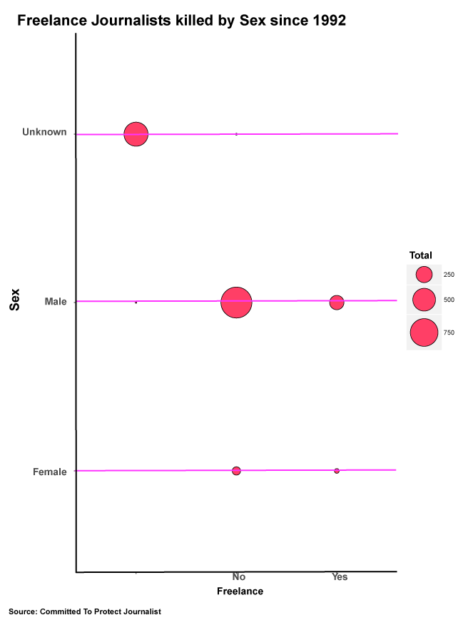

This Bar chart is the Top 10 country Journalists killed

This point chart gives us the breakdown by Sex of killed Journalists

This point chart tells us the relationship between gender of Journalists killed and Freelancer
This is my final data visualization project. Thank you.